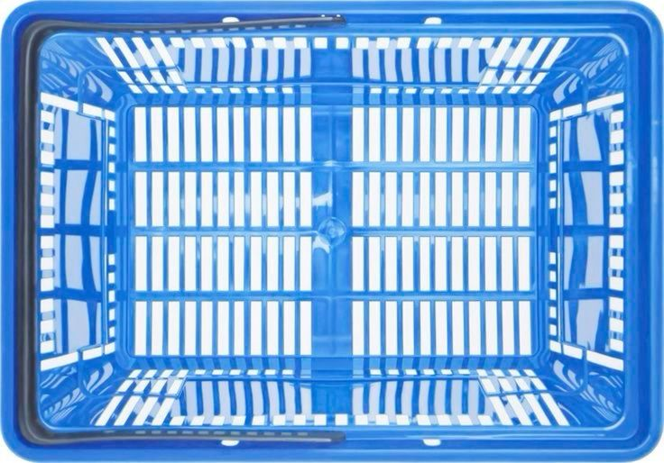
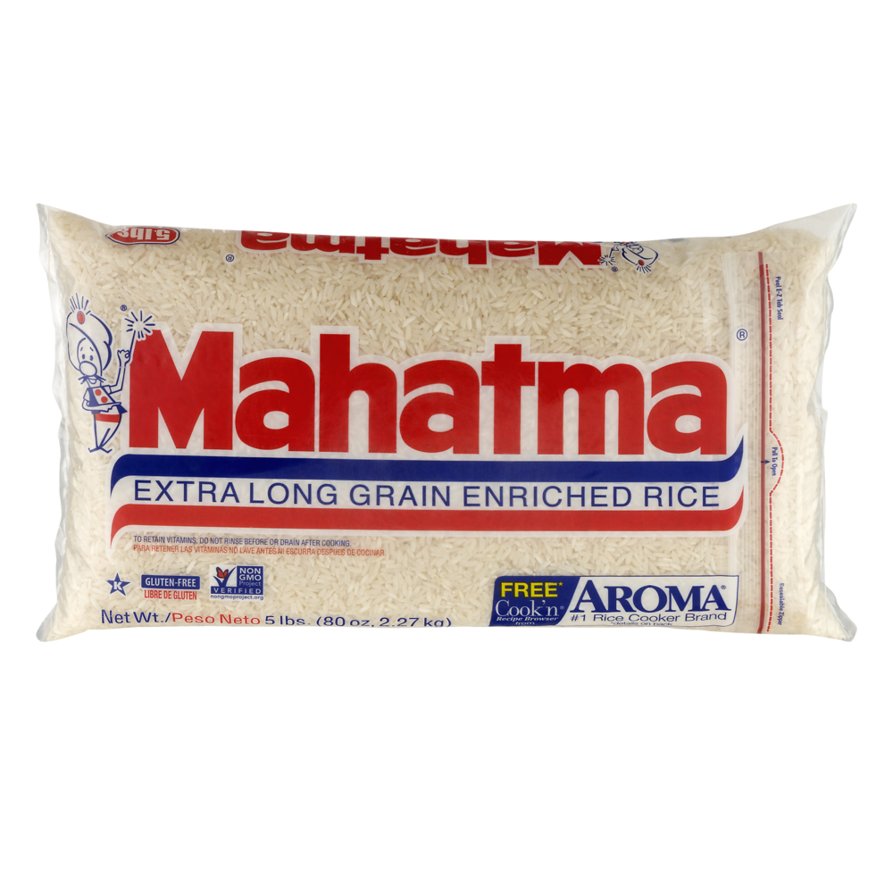
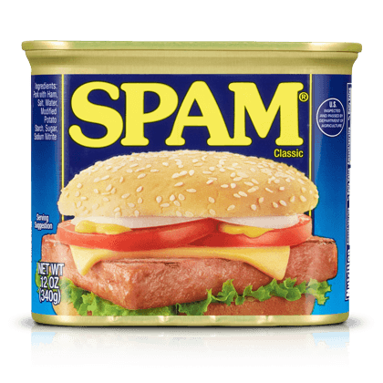
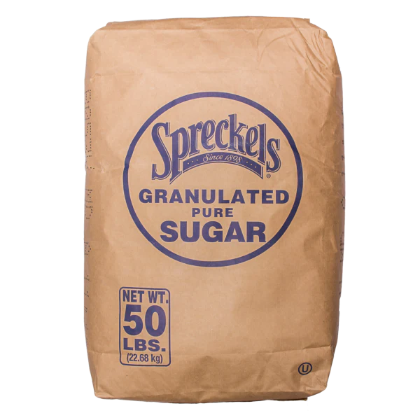
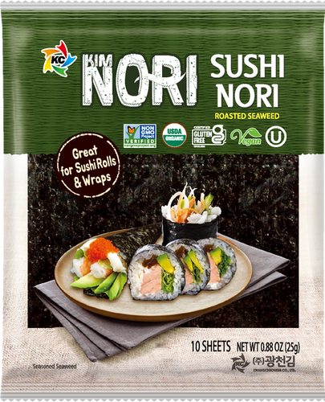

- Rinse 1 cup of rice until the water is clear.
- Combine the rice and 1/2 cup water in a rice cooker or pot. Cook according to instructions (about 15-20 minutes)
- Slice the spam into 1/4 to 1/2 inch pieces.
- Fry the spam in a pan until golden brown on both sides (about 3-4 minutes each side).
- Mix 2 tablespoons soy sauce and 1 tablespoon sugar in a bowl.
- Pour the sauce over the fried spam and cook for 1-2 minutes.
- Take a portion of cooked rice (about 1/4 cup) and press it down on a seaweed sheet.
- Place a slice of spam on top of the rice.
- Add another layer of rice and press down.
- Wrap the seaweed around the rice and spam.